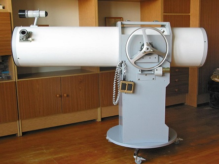

.
SAMODZIELNA BUDOWA TELESKOPU ASTRONOMICZNEGO
|
Prezentowany poniżej teleskop powstał VII-VIII 2004r, w swojej historii gościł on lustra 270/1500, 320/1500, 305/1500. Poniższe zdjęcia prezentują go w pierwotnej formie w wersji 270/1500. Dzięki zastosowaniu bardzo sztywnej tuby i obejm osadzonych na łożyskach w chwili obecnej wraz z lustrem 305/1500 doskonale spisuje się jako astrograf DS. Dlaczego podejmując się budowy teleskopu zdecydowałem się na Newton-a klasy 300/1500? Moim zdaniem, teleskop systemu Newton-a jest najuniwersalniejszym narzędziem, budowa takiego teleskopu jest prosta a optymalna średnica lustra, oraz jasność, zapewniają mu wszechstronność zastosowań. Budowa teleskopu kosztowała mnie 2 miesiące dość intensywnej pracy a po dodaniu napędów i motofokusa jest moim podstawowym narzędziem pracy.   Tuba teleskopu została wykonana z rury kominowej łączonej na szew, z blachy o grubości 0,8mm, na wymiar ostateczny 1500mm długości, oraz Ø 320mm średnicy. Rurę taką można wykonać na zamówienie w firmach produkujących wkłady kominowe. W środku tubu, dla zwiększenia sztywności (lustro klasy ~ 300/1500 swoje waży) zainstalowałem wręgi z grubego drutu. Wnętrze tuby zostało pomalowane proszkowo na czarny mat. Tubus został osadzony w otwieranych obejmach, co umożliwia przemieszczanie i obracanie tuby. Połowy obejm zamykane są specjalnymi klamrami widocznymi na zdjęciach poniżej. Montaż Dobsona został wykonany ze starej solidnej po meblowej płyty wiórowej o grubości 20mm. 
 
 Napędy - Oś pozioma teleskopu na montażu to osie ze śrub Ø 20mm ułożyskowane w oprawach w kształcie omegi. Napęd tej osi stanowi koło aluminiowe od pralki z nawiniętym w rowku prętem gwintowanym M8 pracującym jako ślimacznica, za ślimaka zaś czyni również kawałek pręta, również ułożyskowany i napędzany silnikiem 24V z kserokopiarki. Całość, do zgrubnego ustawienia, odbezpiecza się za pomocą widocznej pomiędzy ramionami koła, małej "wajchy" Warto w tym miejscu rozpisać się troszkę więcej o procesie mocowania pręta gwintowanego na kole od pralki. Pręt gwintowany to szpilka gwintowana M8 należy przygotować dłuższy niż wynosi obwód koła, ponieważ końce ok. 30-40cm idą do ucięcia. Czynność owijania pręta najlepiej wykonywać we dwie osoby. Przykładamy pręt do rowka koła miejscem 40cm od końca, a druga osoba cienkim mocnym owija kilka razy obręcz koła i pręt. Mając dużą dźwignię, bo pręt jest długi, naciągamy/owijamy go mocno na obręcz, a druga osoba, co kawałek, zabezpiecza go kawałkami drutu, do czasu aż oba końce pręta spotkają/skrzyżują się. Ucinamy końce tak, aby między nimi pozostało trochę miejsca. Będą one nam odstawać od koła, ale na tym etapie to normalne. Teraz, na końcach należy przyspawać dwie nakrętki M8, a w jednej z nich rozwiercić gwint, tak, aby przez otwór przeszła swobodnie śruba M8. Rysunek Następnie w rozwierconą nakrętkę wkładamy śrubę takiej długości, aby dosięgnąć do nakrętki z gwintem, i zaczynamy delikatnie ściągać oba końce ku sobie, Gdy nakrętki się do siebie trochę zbliżą, zdejmujemy druty przytrzymujące pręt na obręczy i kontynuujemy naciąganie śrubą. Jak zauważycie, pręt samoczynnie będzie się ładnie układał na kole, nie należy jednak przesadzić z naciągiem, aby nie zerwać spawów. Na koniec, ucinamy wystający nadmiar śruby i gotowe. 
 Oś pionowa montażu Dobsona to także śruba 20mm, tym razem jedna, wspawana w środek trójramiennego stojaka, dla lepszej pracy także została ułożyskowana względem podstawy. Podstawa Dobsona toczy się na trzech punktach podparcia, dwóch parach swobodnych łożysk, i trzecim, stanowiącym napęd w postaci wykonanej z bardzo twardej gumy rolki od kserokopiarki. Rolka ta jest napędzana przez silnik z kserokopiarki wyposażony w przekładnię 1:200, co zapewnia i stosowną siłę i stosowną precyzję. Wysprzęglanie napędu do zgrubnego ustawienia teleskopu następuje przez nadepnięcie widocznej na zdjęciach odstającej dźwigni. 
 Rolka napędowa stanowiąca trzeci punkt podparcia montażu.  Korpus pająka to okrągły element z kserokopiarki, środkowy otwór posiadał, trzy kolimacyjne zostały nawiercone i nagwintowane. Ramiona pająka to dłuuugie i sztywne śruby od starego silnika elektrycznego zostały oszlifowane na przekrój 5x3,5mm. Gniazdo lustra wtórnego stanowi ścięta pod kątem rurka PCV. Lusterko kątowe jest firmy Antares, o krótszym boku elipsy 63mm, przyklejone zostało na silikon. Dobierając parametry teleskopu, ognisko ustanowiłem tak, aby wypadało 70mm za tubą, ponieważ, z założenia miał on być teleskopem do obserwacji wizualnych, chciałem zaoszczędzić na winietowaniu. Z czasem, gdy teleskop stał się astrografem, lustro główne zostało podniesione, a miejsce ogniskowania wysunięte dalej. 
 Cela lustra głównego 270/1500 została wykonana z połączonych z sobą dwóch płyt wiórowych 20mm grubości każda, na zewnątrz wykończonych tekstolitem. Część ruchoma z lustrem jest wykonana z jednej warstwy pływy wiórowej o grubości 20mm, jest osadzona na śrubach M8 i kontrowana sprężynami od parasolek. Posiada trzy wagi o trzech punktach podparcia każda.  Szukacz teleskopu został wykonany z obiektywu lornetkowego osadzonego w rurkach PCV. Stopka powstała z pospawanego profilu, rurki, oraz z metalowej osłony na kości elektryczne, takiej, jakie są stosowane przy żyrandolach pod sufitem.  Budowa wyciągu okularowego Wyciąg okularowy postanowiłem wykonać samodzielnie. Opis TUTAJ.  Na koniec, porównanie teleskopów 270/1500 i 114/900.  
|
{kind=link}
{kind=link}